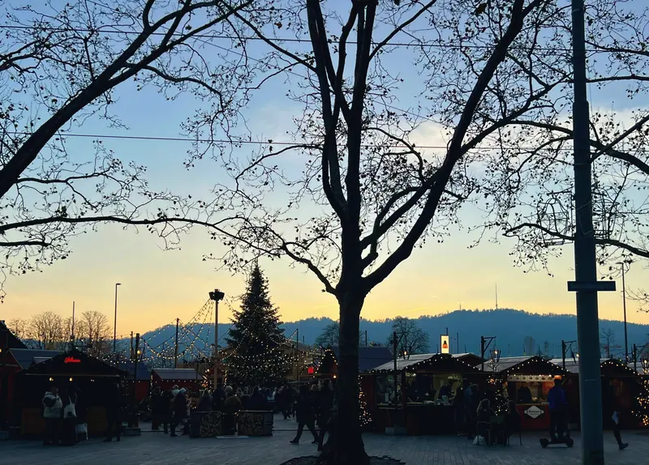

Para hoy
¿Qué hacemos esta tarde?

Navidad: qué está abierto
● abierto, con hora de cierre · ? pendiente de confirmación · — cerrado
Lugares
Todo en el mapa
Empezad por el TOP 10 o por la selección de Mike. El mapa y las fichas muestran siempre lo mismo.
Ideas
Ideas para una tarde
Combinaciones que funcionan bien, sin día fijo. Guardad las que os gusten en vuestro plan.
Mi plan
Vuestro plan
Con el corazón guardáis lugares e ideas. Aquí podéis asignarles un día si queréis, abrir la ruta en Google Maps y mandar el plan a vuestro compañero por WhatsApp.
El plan se guarda en este móvil y funciona sin conexión. El mapa y Google Maps necesitan internet.
Información práctica
Conviene saber
Francos, no euros
Se paga en francos suizos (CHF). La tarjeta y el pago sin contacto funcionan casi en todas partes; algunos mercados son solo con tarjeta. La propina está incluida; redondear es un detalle.
Transporte público
Tranvías, autobuses y trenes son puntuales y frecuentes. El billete se compra antes de subir (máquina o app SBB Mobile); hay controles.
Zonas ZVV y tren SBB
En la ciudad basta un billete ZVV de la zona 110. El aeropuerto está en otra zona. Para otras ciudades se compra un billete SBB hasta el destino. Comparad precios antes de comprar un abono o la Zürich Card.
Frío y oscuridad
Anochece hacia las 16:40 y suele hacer entre 2 y 7 °C, a menudo con niebla. Abrigo, gorro, guantes y calzado cómodo e impermeable: el empedrado del casco antiguo resbala con la lluvia.
Domingo
Casi todas las tiendas cierran. Abren la estación central y su centro comercial subterráneo, el aeropuerto, muchos cafés, museos y los mercados navideños.
Reservar
En Adviento, los restaurantes de fondue se llenan. Reservad uno o dos días antes, sobre todo viernes y sábado.
Qué probar
Fondue (queso fundido con vino blanco; se acompaña de vino o té), raclette, rösti (patata rallada y dorada), Zürcher Geschnetzeltes (ternera en salsa de nata, el plato de la ciudad), chocolate y los Luxemburgerli de Sprüngli. En Adviento: «Tirggel», galletas finas de miel.
Enchufes, agua, emergencias
Enchufe suizo (tipo J): llevad adaptador. El agua del grifo y de las fuentes es potable. Emergencias 112, ambulancia 144, policía 117.
Excursiones más lejos
El Rigi Kulm, con vistas alpinas impresionantes, está a unas 1,5–2 horas en tren: fuera del límite de una hora, solo con un día entero y cielo despejado.
Sin conexión
Añadid la guía a la pantalla de inicio del móvil. Los textos y vuestro plan funcionan sin internet; el mapa, el tiempo y Google Maps no.